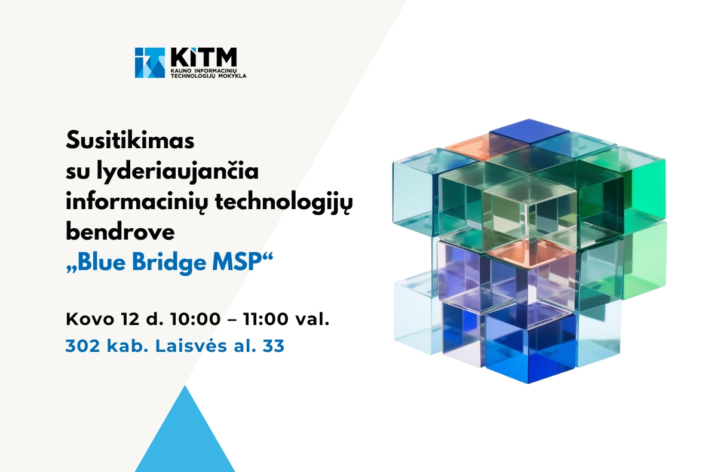

Susitikimas su lyderiaujančia informacinių technologijų bendrove „Blue Bridge MSP“

Susitikti su mūsų mokyklos bendruomene ir pasidalinti savo patirtimi bei naujausiomis IT rinkos tendencijomis atskubės lyderiaujančios informacinių technologijų bendrovės „Blue Bridge MSP“ atstovai.
Kviečiame dalyvauti ir iškamantinėti kuo šiuo metu gyvena IT rinka, kokių specialistų reikės artimiausiu metu, bei kaip „Blue Bridge MSP“ gali pagelbėti jums išbandyti savo jėgas, apsispręsti ir pradėti kurti savo profesinį gyvenimo kelią.
Pagrindinis puslapuis